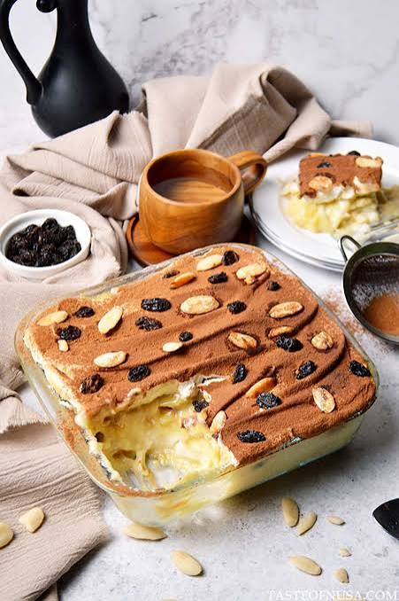
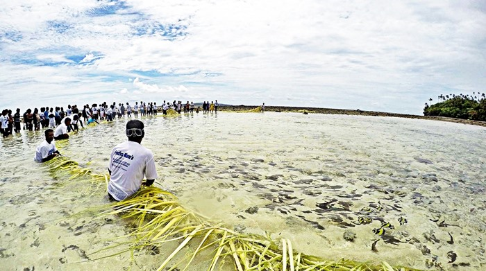

Tarian & Kesenian
Tarian & Kesenian
Minahasa
Tari Kabasaran
- Jenis: Tarian Perang
- Asal: Suku Minahasa
- Keunikan: Gerakan Gagah & Kostum Merah
- Status: Dilestarikan
- Biasa Tampil: Upacara Adat, Festival
 Alat Musik Tradisional
Alat Musik Tradisional
Minahasa
Musik Kolintang
- Jenis: Alat Musik Perkusi Kayu
- Asal: Minahasa
- Keunikan: Terbuat dari Kayu Ringan
- Status: Warisan Budaya Takbenda
- Biasa Tampil: Acara Adat, Pertunjukan
 Rumah Adat
Rumah Adat
Minahasa
Rumah Adat Pewaris (Walewangko)
- Jenis: Rumah Panggung Kayu
- Asal: Minahasa
- Keunikan: Tangga Ganda di Depan Rumah
- Status: Cagar Budaya
- Bisa Dilihat di: Museum & Desa Adat
 Tradisi & Kearifan Lokal
Tradisi & Kearifan Lokal
Minahasa
Tradisi Mapalus
- Jenis: Gotong Royong
- Asal: Minahasa
- Keunikan: Kerja Sama Bergilir Antarwarga
- Status: Nilai Sosial Turun-Temurun
- Diterapkan: Pertanian, Acara Kampung
 Kuliner Khas
Kuliner Khas
Manado
Bubur Tinutuan
- Jenis: Bubur Sayur
- Asal: Manado
- Rasa: Gurih, Ringan
- Isi: Labu, Jagung, Sayuran
- Biasa Disantap: Sarapan Pagi
 Kuliner Khas
Kuliner Khas
Manado
Cakalang Fufu
- Jenis: Ikan Asap Bumbu
- Asal: Manado
- Rasa: Gurih, Sedikit Pedas
- Bahan Utama: Ikan Cakalang
- Biasa Disantap: Lauk Sehari-hari, Oleh-oleh

Kuliner KhasManado
Klappertaart
- Jenis: Kue Kelapa Krim
- Asal: Manado (Pengaruh Belanda)
- Rasa: Manis, Lembut
- Bahan Utama: Kelapa Muda, Susu
- Biasa Disantap: Camilan, Oleh-oleh
Festival Budaya
Tomohon
Tomohon International Flower Festival
- Jenis: Festival Tahunan
- Asal: Tomohon
- Keunikan: Parade Kendaraan Hias Bunga
- Status: Agenda Wisata Nasional
- Diadakan: Sekali Setahun

Tradisi & AdatKepulauan Talaud/Sangihe
Pesta Panen Mane'e
- Jenis: Upacara Adat Menangkap Ikan
- Asal: Kepulauan Talaud
- Keunikan: Dilakukan Bersama Secara Massal
- Status: Dilestarikan
- Diadakan: Musim Tertentu